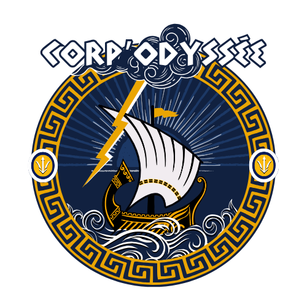

Questionnaire
Quel parcours as-tu choisi ?
-- Sélectionne un parcours --
Prépa - Parcours fast track
Prépa - Parcours asso/aménagé
AST - Parcours asso/aménagé
AST - Parcours classique
Ton année :
-- Sélectionne ton année --
1A
2A
3A
4A
Es-tu ou veux-tu être dans une asso ?
-- Sélectionne une réponse --
Oui, j’y suis
Oui, je veux coopter
Non
Si oui, pourquoi t’engages-tu dans une association ?
À combien d’événements environ participes-tu par mois ?
-- Choisis une fourchette --
Entre 0 et 5
Entre 5 et 10
Plus de 10
Sur une échelle de 1 à 5, à quel point te sens-tu investi.e dans la vie associative ?
1
2
3
4
5
As-tu listé ?
-- Sélectionne --
Oui
Non
Quels types d’événements préfères-tu ?
Gros events festifs
Événements axés pro
Petits events cosy
Qu'attends tu de la vie associative ?
À la suite de l'année associative 2024-2025, as tu des axes d'amélioration pour le nouveau mandat Corpo ?
Envoyer le questionnaire